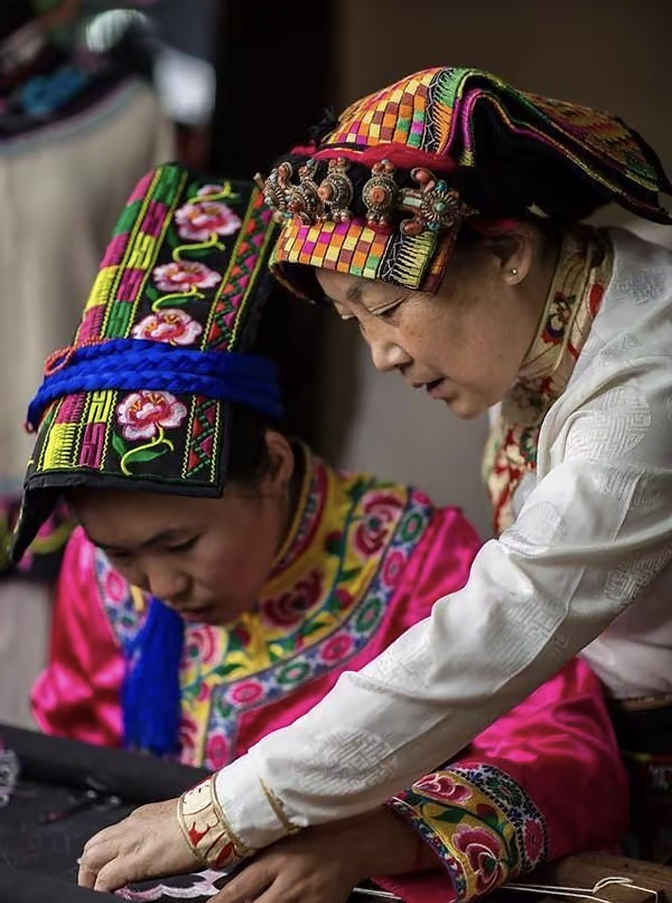

藏羌绣技艺面临人亡艺绝，年轻人文化认同感脱节。
传统产品附加值低，绣娘劳动保障不足，难以产业化。
传统纹样与现代审美隔阂，缺乏数字化的传播手段。

我们以“区块链+AIGC”技术创新破局，首创非遗纹样数据库，实现基因的活化再生。不仅保护历史，更是在创造未来。
签约绣娘
参与青年
带动绣娘增收
累计合作协议
办公室管理
产品设计加工
产品与服务售卖
间接带动就业
立足“藏羌走廊”历史底蕴，深度融合革命精神，赋予非遗鲜明的时代价值。
以纹样为活化核心，生动诠释民族交流融合，是铸牢中华民族共同体意识的鲜活实践。
目前项目已沉淀可复制的非遗振兴模式，正为多个乡村地区注入经济活力。